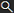

Assign an item attribute to an item
After you have created an item attribute, you can assign the item attribute to an item to configure product variations. For example, a t-shirt with attributes such as Color and Size can have variations such as Red / Small or Blue / Medium.
To assign an item attribute to an item
Choose

, enter woocommerce connector setup, and then choose the related link.The WooCommerce Connector Setup page opens.
On the action bar, choose Data > Webstore Item Mapping.
The Webstore Item Mapping page opens.
Select the item for which you want to assign an attribute, and then on the action bar, choose Item > Webstore Attributes.
The Webstore Item Attributes page opens.
For each item attribute that you want to assign to the item, perform the following steps:
On the action bar, choose New.
A new row appears.
In Attribute, specify the attribute that you want to assign.
To assign an attribute value, on the action bar, choose Item Attribute Values.
The Item Attribute Values page opens.
Select one or more item attribute values, and then choose OK.
To have the item attributes for the item synchronized to your webstore, perform the following steps:
Review your configuration for pushing item data to your webstore and ensure that Items is set to Mapped Only.
To learn more, go to Push webstore items.
Perform an item synchronization.
To learn more, go to Synchronize items.
Demo video
Related information
Feedback
To send feedback about this page, select the following link: